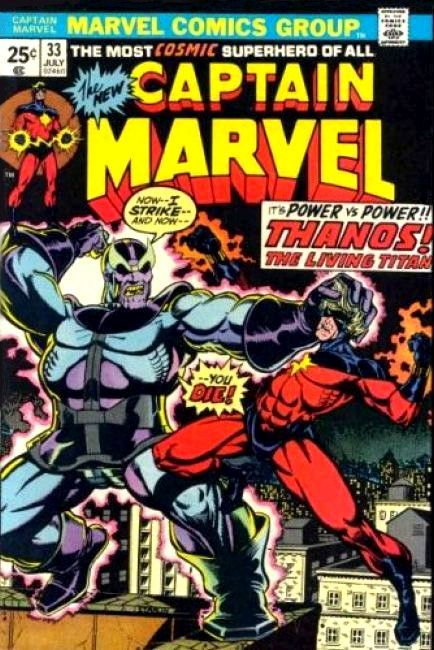
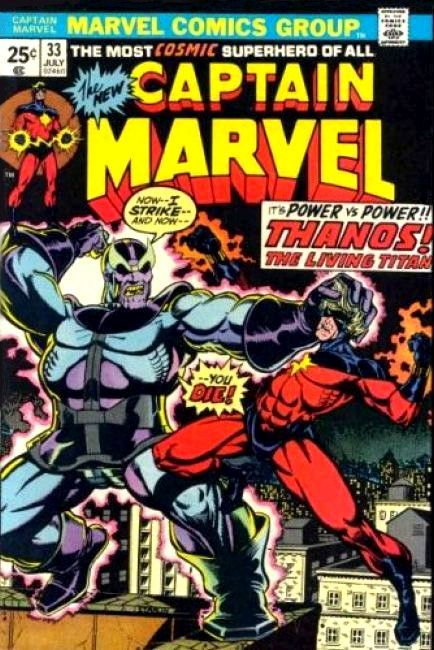

Following a trial in which DC Comics sued Fawcett Comics for breach of copyright, claiming Fawcett's Captain Marvel was too similar to Superman, the latter stopped publishing Captain Marvel. In the late sixties Marvel gained the trademark "Captain Marvel" with their first series.
To retain their trademark, Marvel has had to publish a Captain Marvel title at least once every two years since, leading to a number of ongoing series, limited series, and one-shots featuring a range of characters using the Captain Marvel alias.
The first Captain Marvel was created by Stan Lee and Gene Colan in Marvel Super-Heroes #12 (December 1967). This character is an alien military officer, Captain Mar-Vell of the Kree Imperial Militia, who is sent to observe the planet Earth as it is developing technology to travel into space. Mar-Vell eventually wearies of his superiors' malign intent and allies himself with Earth, and the Kree Empire brands him a traitor. From then on, Mar-Vell fights to protect Earth from all threats.
He was later revamped by Roy Thomas and Gil Kane. Having been exiled to the Negative Zone by the Supreme Intelligence, the only way Mar-Vell can temporarily escape is to exchange atoms with Rick Jones by means of special wristbands called Nega-Bands. He is also given superpowers and his Kree military uniform is replaced with a form fitting costume.
With the title's sales still flagging, Marvel allowed Jim Starlin to conceptually revamp the character, although his appearance was little changed. Mar-Vell is freed from the Negative Zone and becomes a cosmic champion, the "Protector of the Universe" appointed by the cosmic entity Eon. Together, Mar-Vell and Rick continue to battle against evil, most notably battling the Death-worshipping Thanos. Mar-Vell became a close ally of the Titans, and one of their number, Elysius, became his lover.
His career was cut short when he developed inoperable cancer, the result of an earlier exposure to toxic nerve gas during a battle with Nitro. He died from this cancer on Titan in the presence of the Marvel Universe's superhero community, as chronicled in Marvel's first large-format graphic novel, The Death of Captain Marvel.
The second Captain Marvel was created by writer Roger Stern and artist John Romita, Jr.. She first appeared in The Amazing Spider-Man Annual #16 (1982).
The character is Monica Rambeau, a police lieutenant from New Orleans who possesses the power to transform herself into any form of energy. Her powers were briefly altered so that she cannot transform to energy, but instead can generate a personal force field. Sometime later, the Stranger returned her energy transformation abilities. She is a member of the Avengers, and at one point served as their leader. She eventually ceded the Captain Marvel name to the original Captain Marvel's son after which Rambeau took the name Photon, using that for quite some time, until Genis-Vell adopted the same name. Genis-Vell and Monica discussed this and Monica decided on the name Pulsar.
1968 Issue #1 Captain Marvel battles a Kree Sentry in "Out of the Holocaust--a Hero!" Script by Roy Thomas, pencils by Gene Colan, inks by Vince Colletta. Colan/Colletta cover.